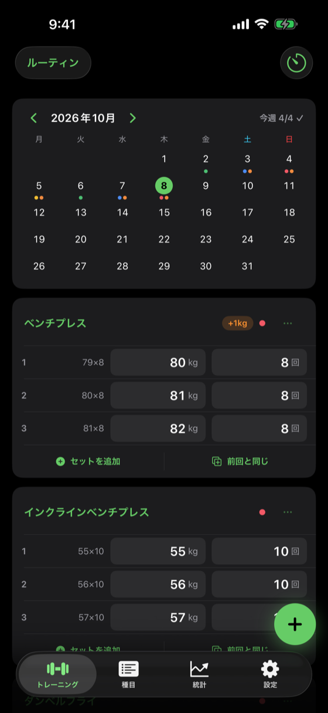

1日分のトレーニングセッションを入力・編集する中心画面

cd ios-apps/WorkoutDiary && fastlane specs で最新UIに自動更新選択した日付のトレーニングセッションを表示・編集する画面。種目ごとにセットを追加し、PR検出・ルーティン適用・インターバルタイマー・シェアを操作できる。アプリの主機能画面。v1.1.0 でホーム画面を全面リデザインし、最速記録 UX を実現した。1.4.0 で画面上部に月カレンダー（MonthCalendar）を置き、1.4.2 でカレンダータブを廃止して月の表示をこの画面に統合した（タブは4つ: トレーニング・種目・統計・設定。WD-010）。
| 要素 | 種類 | 説明 |
|---|---|---|
| 月カレンダー | MonthCalendar（Views/Components/MonthCalendar.swift） | 記録の有無にかかわらず、スクロール領域の先頭に置く（画面に固定せず、記録と一緒に上へ抜ける）。月曜始まり。日のセルに「その日にやった部位」の色の点（WorkoutSession.performedCategories で判定）。日をタップすると選択日が変わる。見出しは「前月 ‹ 年月 › 次月」、右端に「今週 3/4 ✓」（今月を表示しているときだけ）、今日以外を見ているときだけ「今日」ボタン。1.4.2 でカレンダータブを廃止し、月の表示はここだけになった |
| ツールバー左「ルーティン」 | Menu | 「ルーティンから追加」「ルーティンを編集」「ルーティンを保存」（記録がない日は保存を無効） |
| ツールバー右 | Button | インターバルタイマー（timer アイコン） |
| 記録なしの表示 | VStack | アイコン・「記録なし」の文言の下に、選択日の曜日に割り当てたルーティンのボタンを該当するものすべて並べる（WD-007）。見出しの規則は下記「ルーティンボタンの見出し」。中央の「ルーティンから追加」「ワークアウトを追加」の2ボタンは外した（WD-013。入口は左上の「ルーティン」と右下の ＋ に一本化） |
| ExerciseCard（記録あり時） | LazyVStack | 種目ごとのカード View（ExerciseCard.swift）。部位の色の点を表示（旧カレンダータブの部位の凡例の代わりも兼ねる） |
| 今日のまとめカード（記録あり時） | DailySummaryCard | リストの下。今週の達成・連続週（今週を表示しているときだけ）とシェアの入口 |
| FAB（右下固定） | WorkoutFAB | タップで AddWorkoutView を sheet 表示。セット記録直後は上にクイック休憩タイマーチップを一時表示。常設のボトムアクションバーは廃止（WD-009） |
| PR祝賀 / 実績祝賀 | Overlay | PRCelebrationView / AchievementCelebrationView |
記録がない日に出すルーティンのボタンの1行目は、選択日によって次のように出し分ける。ボタンは以前から選択日の曜日で出ていたが、見出しはどの日も「今日のルーティン」だった。1.4.2 でカレンダータブ（これからの日の予定の点）を外したので、その代わりをこの1行が担う（行は増やさず、文言だけを変える）。
| 選択日 | 見出し（日本語） | 見出し（英語） | 文言キー |
|---|---|---|---|
| 今日 | 今日のルーティン: ○○ | Today's routine: ○○ | routine.today.title |
| 今日以外（過去・未来） | この曜日のルーティン: ○○ | Routine for this weekday: ○○ | routine.thisWeekday.title |
2行目は種目名の要約。種目が2つまでは区切って並べ、3つ以上は「先頭2つ＋残りの数」（日本語「ベンチプレス・スクワット 他3種目」／英語「Bench Press, Squat +3 more」）。区切りは日本語「・」、英語「, 」（common.middleDotSeparator。1.4.2 の WD-016 で、英語表示でも全角「・」が出ていたのを修正）。見出しと要約の組み立ては WorkoutSessionViewModel.routineTitle(for:now:) / routineSummary(exerciseNames:) に置き、単体テスト（RecordScreenTextTests）で固定している。
| 状態 | 表示内容 |
|---|---|
| 記録なし・ルーティン該当日（今日） | 月カレンダー + 「記録なし」+ 「今日のルーティン: ○○」ボタン（該当するものすべて） |
| 記録なし・ルーティン該当日（今日以外） | 月カレンダー + 「記録なし」+ 「この曜日のルーティン: ○○」ボタン（該当するものすべて） |
| 記録なし・ルーティン非該当日 | 月カレンダー + 「記録なし」のみ（追加は右下の ＋、ルーティンは左上の「ルーティン」から） |
| 記録あり | 月カレンダー + ExerciseCard リスト + 今日のまとめカード + FAB |
| PR検出 | PRCelebrationView overlay（閉じるボタン付き・Reduce Motion対応・accessibilityAddTraits(.isModal)）→ シェアプロンプト（セッション内1回のみ） |
| 週間目標達成 | 週間目標達成アラート |
| 実績解除 | AchievementCelebrationView overlay |
| 操作 | 遷移先 |
|---|---|
| 月カレンダーの日をタップ / 月送り / 「今日」 | 同画面内で選択日・表示月を切り替え |
| FAB（右下の ＋）タップ | AddWorkoutView (sheet) |
| ルーティンボタン（今日 / この曜日のルーティン）タップ | 即時 applyRoutine（sheet なし） |
| 「ルーティン」→「ルーティンから追加」 | TemplateListView（追加用・sheet） |
| 「ルーティン」→「ルーティンを編集」 | TemplateListView（編集用・sheet） |
| 「ルーティン」→「ルーティンを保存」 | SaveTemplateView (sheet) |
| 今日のまとめカードのシェア | WorkoutShareSheet (sheet) |
| インターバルタイマー（ツールバー） | IntervalTimerView (sheet) |
| PR検出 → Paywall | PaywallView (sheet) |
@Model final class WorkoutSession {
var id: UUID
var date: Date
var note: String
@Relationship(deleteRule: .cascade, inverse: \WorkoutSet.session)
var sets: [WorkoutSet] = []
}
@Model final class WorkoutSet {
var id: UUID
var exercise: Exercise?
var weight: Double
var reps: Int
var order: Int
var session: WorkoutSession?
var duration: Double // 有酸素: 分
var distance: Double // 有酸素: km
}
// ルーティン機能（v1.1.0）
@Model final class WorkoutTemplate {
var id: UUID
var name: String
var createdAt: Date
var assignedWeekdays: [Int] = [] // 0=日, 1=月, ..., 6=土。空配列=曜日固定なし
var entries: [TemplateEntry] = []
func appliesTo(date: Date) -> Bool // 曜日判定メソッド
}CalendarViewModel.categoriesPerformed から WorkoutSession.performedCategories へ移し、月カレンダーの点の色に使うWorkoutSessionViewModel.routineTitle）common.middleDotSeparator（ja「・」/ en「, 」）へ（WD-016）performedCategories（1.4.2 で追加）| バージョン | 日付 | 変更内容 |
|---|---|---|
| 1.0 | 2026-05-09 | 初版作成 |
| 1.1 | 2026-05-14 | v1.0.7: 編集・削除アイコンを各セット行右端に常時表示へ変更（左スワイプ削除・長押しコンテキストメニュー廃止）、種目削除ダイアログを日本語化 |
| 1.2 | 2026-05-23 | v1.1.0: ホーム画面リデザイン全体（ツールバー整理・FAB導入・ボトムアクションバー・日付セレクター「今日」バッジ・エンプティCTA階層化・クイックアクションチップ・ExerciseCard切り出し・ルーティン提案CTA）を反映 |
| 1.3 | 2026-07-07 | v1.2.1 UI/UX/A11y監査対応: PR祝福見出し .white→.primary（ライトモード白文字修正）、祝福オーバーレイに閉じるボタン・isModal・Reduce Motion対応、日付送りボタンVoiceOverラベル付与、EditableSetRow combine化、シェア確認ダイアログ1回制限、空状態CTA主従明確化 |
| 1.4 | 2026-10-08 | アプリ 1.4.2 (21) に合わせて更新。カレンダータブ廃止（WD-010）により月の表示がこの画面の月カレンダーだけになったことを反映。記録がない日のルーティンボタンの見出しを「今日のルーティン」（今日）／「この曜日のルーティン」（今日以外）で出し分ける仕様と、種目名の区切りの修正（WD-016）を追記。未反映だった 1.4.0 までの変更（月カレンダー・左上「ルーティン」メニュー・ボトムアクションバーとクイックアクションチップの廃止〔WD-009〕・中央の2ボタンの撤去〔WD-013〕・今日のまとめカード）もあわせて UI 構成・状態・遷移を現行に書き直し。画面イメージを 2026-10-08 撮影（4タブ）に差し替え |